Miyagimisato
Miyagimisato · Miyagi
Miyagimisato
Highlighted on the Miyagi map.
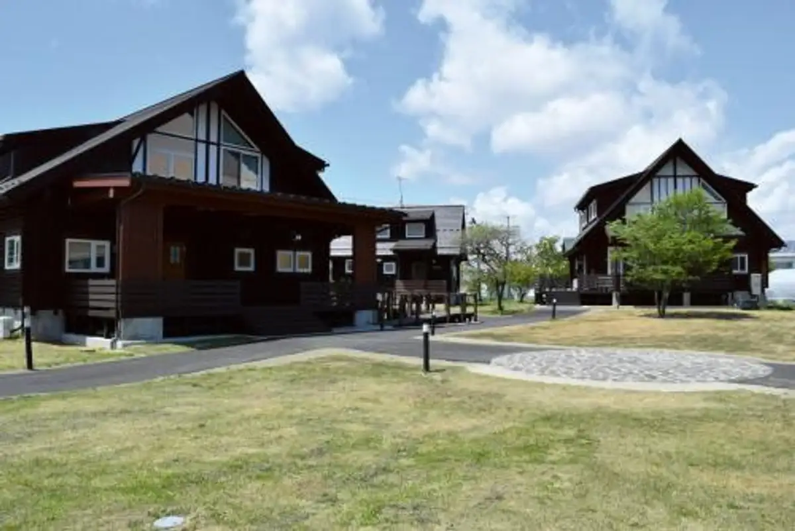
Dining
らーめん ★ひばり★
Raamen ★ Hibari ★
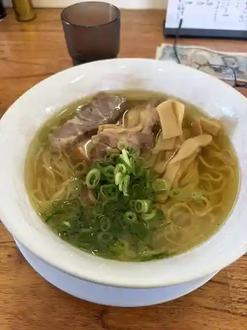
みそべえ
Misobee
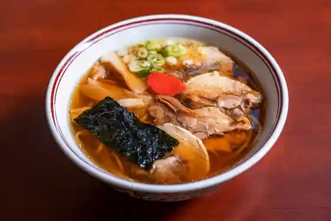
丸竹食堂
Marutake Shokudo
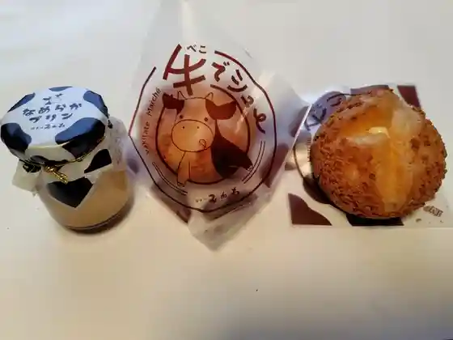
ガトーみかわ
Gatoo Mikawa
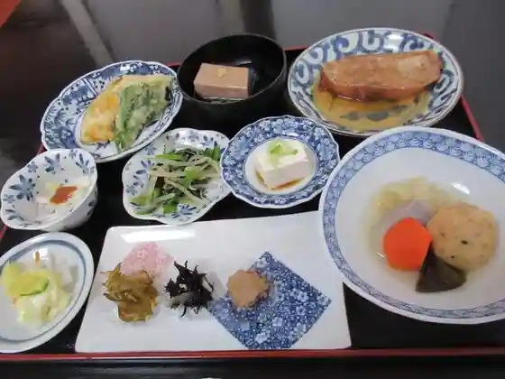
菜園レストラン 野の風
Saien Resutoran No No Kaze
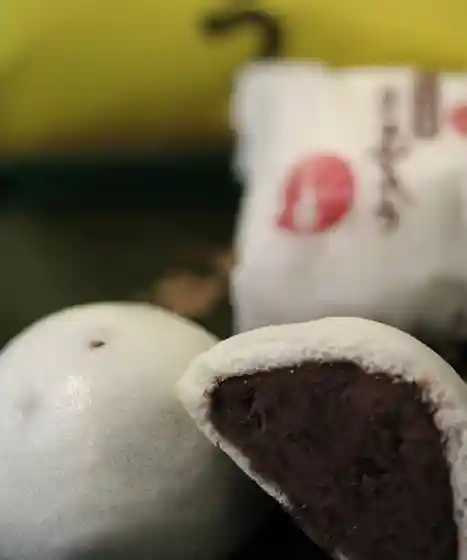
山の神まんじゅう本舗 村上屋
Yama No Kami Manjuu Honpo Murakami Ya
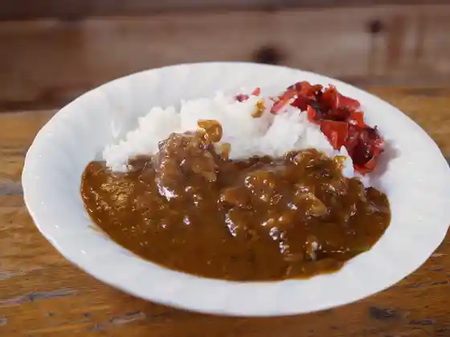
メイプル
Meipuru
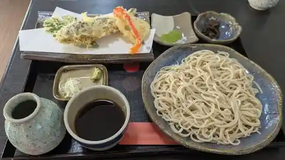
葵
Aoi
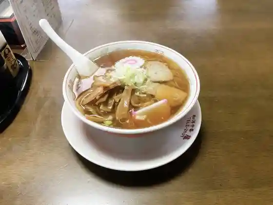
藤
Fuji
ラーメンショップ 北浦
Raamenshoppu Kitaura
味和居
Aji Wa Kyo
ティーカフェ
Teiikafe
キッチンハウス 赤い糸
Kitchinhausu Akai Ito
とんかつふじ
Tonkatsufuji
丸福
Marufuku
ラーメン 一慶
Raamen Ikkei
海鮮食堂 ととや
Kaisen Shokudo Totoya
味噌工房麺助
Miso Koubou Men Jo
花月食堂
Kagetsu Shokudo
聚福源
Ju Fuku Gen
サクラ ノ マ
Sakura No Ma
伊勢屋
Iseya
はなやか亭
Hanayaka Tei
ラ プラタ
Ra Purata
上野屋
Ueno Ya
ウジエスーパー 美里店
Ujiesuupaa Misato Mise
米Cafe 88
Cafe 88
おんべこ村のうさぎ家
Onbeko Mura Nousagi Ie
こごたの地酒屋 齋林本店
Kogotano Jizake Ya Sai Hayashimoto Mise
桝家
Masu Ie
らーめん宿 よしべえ
Raamen Yado Yoshibee
ぱんだやきのおみせ ぶれいむ
Pandayakinoomise Bureimu
喫茶南郷
Kissa Nangou
禾食や
Nogi Shoku Ya
だんご屋
Dango Ya
マミー弁当
Mamii Bentou
旭屋食堂
Asahiya Shokudo
田尻屋寿司
Tajiri Ya Sushi
くぬぎの木
Kunugino Ki
Cafe Misatoko
Cafe Misatoko
大ちゃん食堂
Dai Chan Shokudo
花野果市場
Hanano Ka Shijou
カフェ ピカ
Kafe Pika
鎌田醤油
Kamada Shouyu
八角堂
Hakkaku Dou
ササキ会館
Sasaki Kaikan
まとば
Matoba
ふじ食堂
Fuji Shokudo
大番割烹
Ooban Kappou
はなちゃん
Hanachan
南部家敷 小牛田店
Nanbu Ie Shiki Kogota Mise
華園
Hanazono
鳥由
Tori Yu
和 もり田
Wa Mori Ta
兆治
Chouji
居酒屋 姫輝
Izakaya Hime Teru
Feliz&Rico
Feliz&Rico
ジョイフル 宮城小牛田店
Joifuru Miyagi Kogota Mise
平禄寿司 小牛田店
Taira Roku Sushi Kogota Mise
木の屋石巻水産 美里町工場直売所
Ki No Ya Ishinomaki Suisan Misato Machikoujou Chokubai Tokoro
モンペリエ ヨークベニマル小牛田店
Monperie Yookubenimaru Kogota Mise
和風レストランまるまつ 小牛田店
Wafuu Resutoran Marumatsu Kogota Mise
魚春 さわ田
Gyoshun Sawa Ta
en ROSE
en ROSE
めん六や 宮城小牛田店
Men Roku Ya Miyagi Kogota Mise
カフェ トイ・トイ・トイ
カフェ トイ・トイ・トイ
A・COOP こごた店
ACOOP
ダイニング旬祭
Dainingu Jun Matsuri
焼き鳥・青ちゃん
焼き鳥・青ちゃん
和菓子 はらはた
Wagashi Harahata
友栄会館
Tomo Sakae Kaikan
10.4 小牛田店
10.4
みーと工房 とんたろう
Miito Koubou Tontarou
カネサオーガニック味噌工房
Kanesaooganikku Miso Koubou
セブン-イレブン 美里町二郷店
Sebun - Irebun Misato Machi Nigou Mise
佐々木菓子店
Sasaki Kashi Mise
ミニストップ 宮城美里店
Minisutoppu Miyagi Misato Mise
豆こん道
Mame Kon Michi
おみき茶屋
Omiki Chaya
御免
Gomen
大島屋
Ooshima Ya
村上酒店
Murakami Saketen
千寿司
Chizu Tsukasa
カナディアンナイト
Kanadiannaito
手作り菓子の店. いとう屋
Tezukuri Kashi No Mise . Itou Ya
高新食堂
Koushin Shokudo
笑楽
Warai Raku
居酒屋 やっこ
Izakaya Yakko
美代の屋
Miyo No Ya
すいーつ畑 ふしみ
Suiitsu Hatake Fushimi
居酒屋向日葵
Izakaya Himawari
旅館 旭館
Ryokan Asahi Kan
輝寿司
Teru Sushi
川敬商店
Kawa Takashi Shouten
酒処岬
Sake Tokoro Misaki
和食処千代
Washoku Tokoro Chiyo
Misoichi
Misoichi
Farmer s Restaurant No No Kaze
Farmer s Restaurant No No Kaze
Restaurant Joyfull Miyagi Kota
Restaurant Joyfull Miyagi Kota
Mommy Bento
Mommy Bento
Genkotsu Ya Kogoda
Genkotsu Ya Kogoda
Koraku
Koraku
Shichifukurai
Shichifukurai
Ippuku
Ippuku
Chinese Cuisine Ajiwai
Chinese Cuisine Ajiwai
Soba Restaurant Daimyo
Soba Restaurant Daimyo
Sobadokoro Genzo
Sobadokoro Genzo
Canadian Coffee House Maple
Canadian Coffee House Maple
Heirokuzushi Kogota
Heirokuzushi Kogota
Uoharu Sawada
Uoharu Sawada
Kemuri Ya
Kemuri Ya
Ramen Yado Yoshibe
Ramen Yado Yoshibe
Noodle House Ikko
Noodle House Ikko
Kotobukitei
Kotobukitei
Senzushi
Senzushi
Uosai
Uosai
Tomoetei
Tomoetei
Business Hotel Sendaiya Washokudokoro Sendai
Business Hotel Sendaiya Washokudokoro Sendai
Maehara Kappo
Maehara Kappo
Ramen Shop Kitaura
Ramen Shop Kitaura
Oban Sushi
Oban Sushi
Stamina Hormone Dining Ippukuya
Stamina Hormone Dining Ippukuya
Choji
Choji
Nambuyashiki Kogota
Nambuyashiki Kogota
Koshin Shokudo
Koshin Shokudo
Masuya
Masuya
Ippaiya Yokkoyori
Ippaiya Yokkoyori
Koka
Koka
Senryu
Senryu
Jusaku
Jusaku
Izakaya Onbeko
Izakaya Onbeko
Shoraku
Shoraku
Izakaya Himawari
Izakaya Himawari
Yoi Dokoro Sakura
Yoi Dokoro Sakura
Dining Junsai
Dining Junsai
Izakaya Shuraku
Izakaya Shuraku
Usagiya
Usagiya
Ito Pastry
Ito Pastry
Marche Mikawa
Marche Mikawa
Hatsuhana
Hatsuhana
Bakery Laplata
Bakery Laplata
Japanese Restaurant Chiyo
Japanese Restaurant Chiyo
Sendaiya Pastry
Sendaiya Pastry
Fukutomi
Fukutomi
Fugetsudo
Fugetsudo
Ryo
Ryo
Horoyoi Izakaya
Horoyoi Izakaya
Izakaya Poppo
Izakaya Poppo
Izakaya Komodaya
Izakaya Komodaya
Shop
Hanaka Market
Hanaka Market — local produce direct-sale market
Kinoya Ishinomaki Suisan Misato Factory Shop
Kinoya Ishinomaki Suisan Misato factory shop — canned seafood
Sights
Den'en Dotabata Village
Miyagimisato Modern Literature Museum
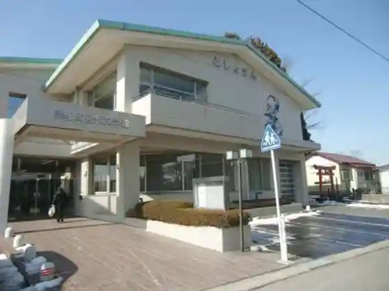
Meat Studio Tontaro
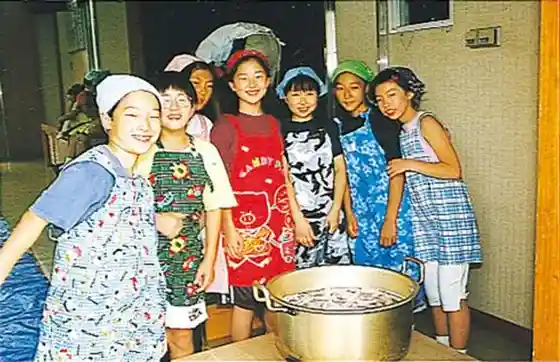